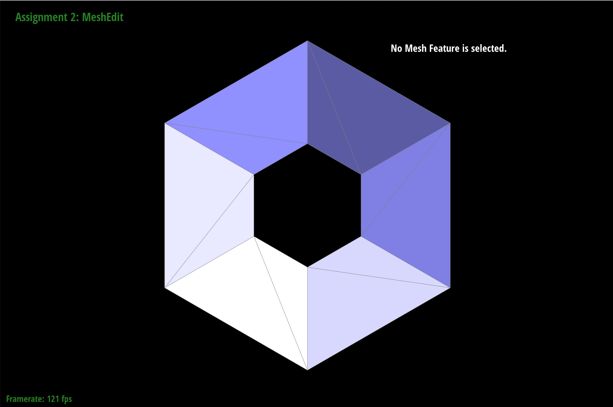
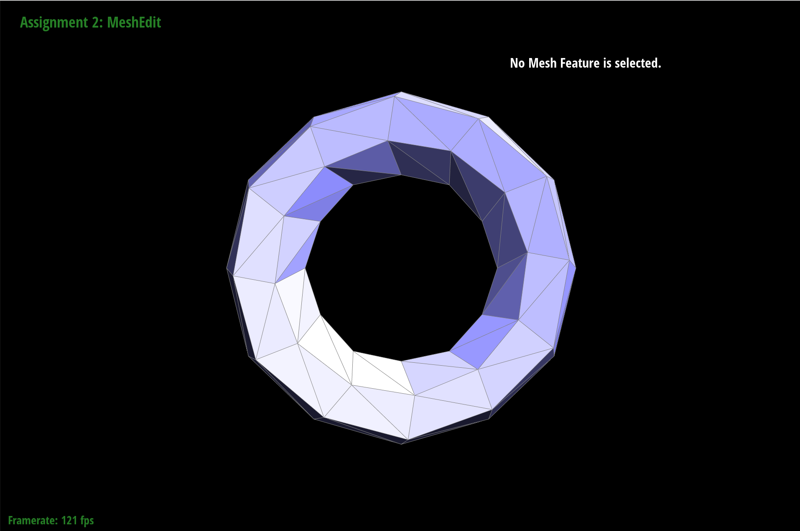
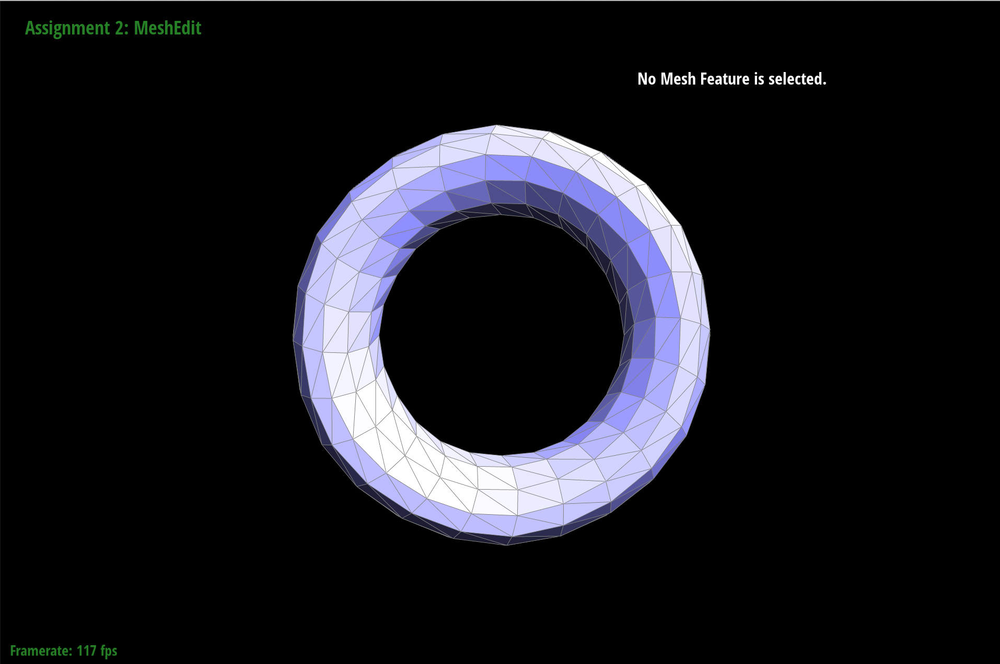
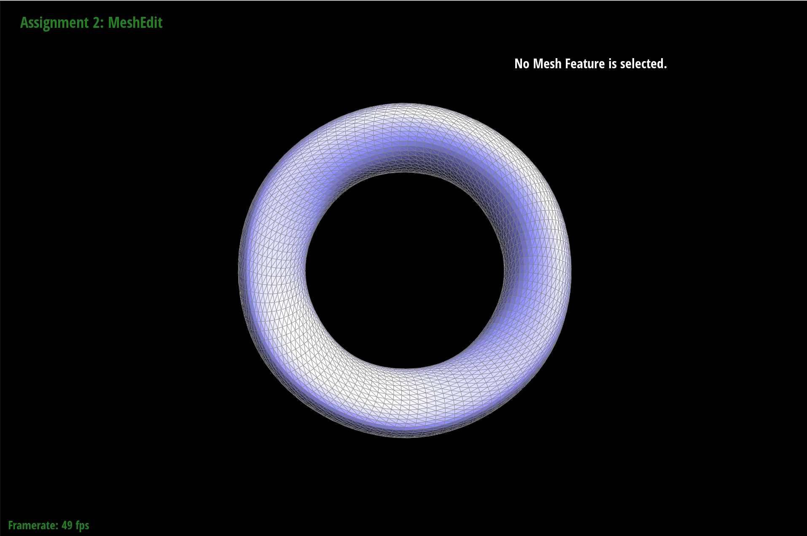
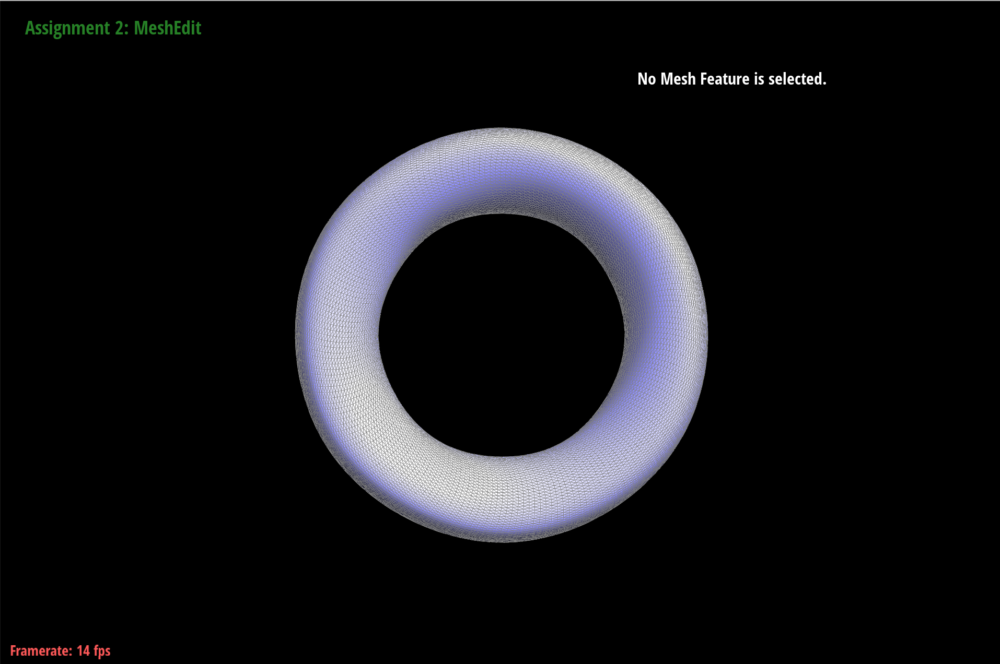
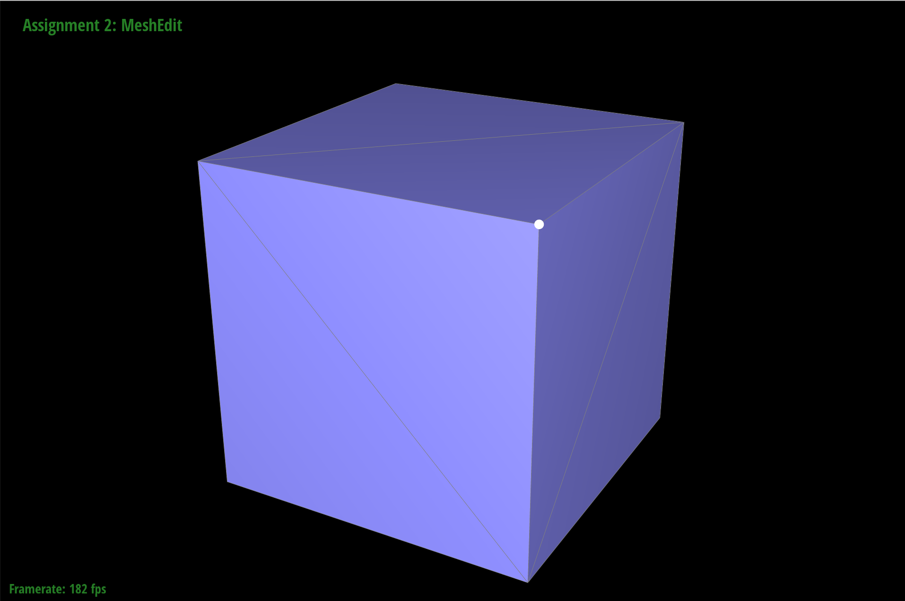
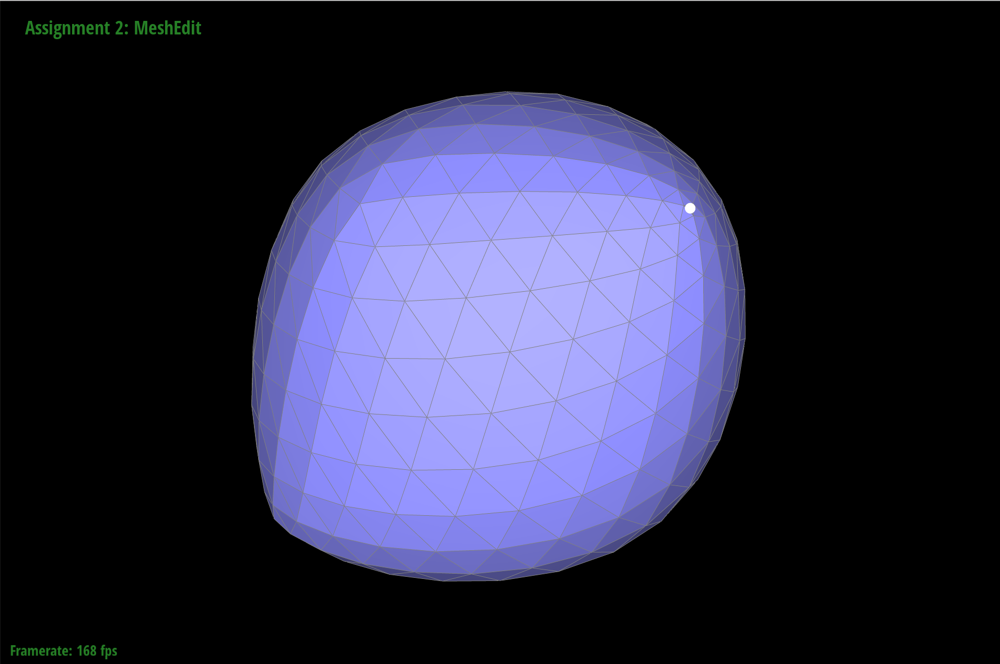
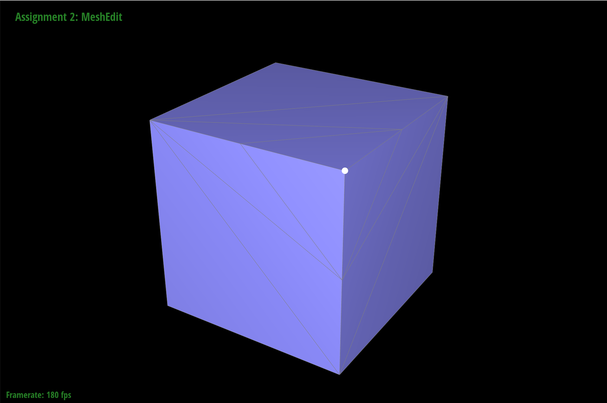
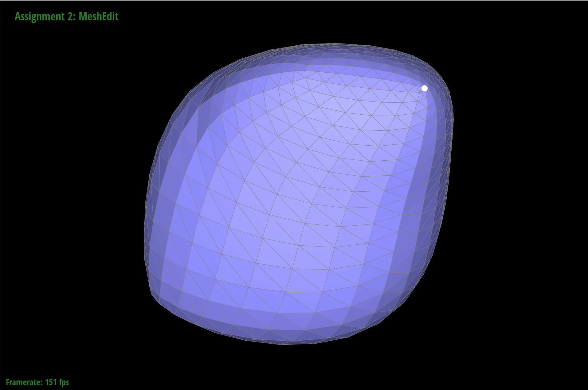

Overview
In this project, I experience mesh geometry by doing some Berier Curves, half edges data structure manipulations, and subdivisions. For a mesh, first the surface is computed to many triangles, then curves are calculated by de Casteljau's algorithm. Then, we implement basic half edge operations, edge flip and split, to support subdivision. Subdivisions make the mesh smoother but also requires the computer to do more calculations.
Section I: Bezier Curves and Surfaces
Part 1: Bezier curves with 1D de Casteljau subdivision
de Casteljau's algorithm is an recursive algorithm to compute Bézier Curve. It takes control points as input, and recursively compute the next level control points until there is only one point left, using linear interpolation \((P_{new} = (1-t) * P_0 + t * P_1)\) between two points. By change the value, t, to interpolate, the final point p will also be change, and the trajectory of p is the Bézier Curve we want to compute.

|

|

|

|

|

|

|
|
Part 2: Bezier surfaces with separable 1D de Casteljau subdivision
To calculate Bézier surface, we first calculate many Bézier curves in one direction using some subset of control points (in cubic Bézier these are 4 points in a set.) Then using the points representation of Bézier curves to calculate the 2D Bézier surface in another direction. My implementations is basically follow this intuition. I first evaluate the Bézier surface in 1D de Casteljau using the interpolation factor of u for 4 sets of points, each set has 4 points. Then I use 1D de Casteljau given the previous Bézier curves to calculate the Bézier surface using the interpolation factor of v.

Section II: Sampling
Part 3: Average normals for half-edge meshes
Basically, I iterate through all the triangles around a vertex p, get the averaged normal of each triangle and stored them into a vector, n, and finally get the normalized n as the average normals for p. Because the implementation of a triangle is given to us, as long as we have the face of that triangle. So we only need to iterate through all the faces around p. I did this by doing in a while loop. First, get the half edge's twin half edge h, of p, (don't forget to store the origin h value to h_orig!), then get the face f, by doing h -> face(). In order to change to another face, we simply set h = h -> next() -> twin(). I stop doing this once the h == h_orig, which I know I go back to the original face. Notice that it is important to increment n first by the normal value of triangles then do the while loop condition evaluation, otherwise we will miss to calculate the last triangle around this vertex p.


Part 4: Half-edge flip
In order to keep things simple and clean, I name and label every elements with different names that we need change their pointers, as the diagram shows. (source: Click Here.) The benefits of labeling all the elements enable us to quickly link between the diagram we draw and the code we write, therefore make few bugs and more easily to debug. By looking at the differences, we can easily assign the value for each pointers.

Notice that it is important to pay attention the orientation of new half edges. For example, if we define the direction of h0 to the left instead to the right in the after flip diagram, then the direction of outside half edges will also be changed (h7 and h8), causing extra unnecessary work to take care. Also, it is important to handle the outside half edges correctly. While it doesn't seem to matter if we only flip one or two edges, if we didn't handle the outside half edges correctly, we will get catastrophic result once we flip many edges.


Part 5: Half-edge split
This part is similar to part 4, except we need to keep create new elements (3 edges, 2 faces, 1 vertex and 6 half edges.) and keep track of more things. Therefore, I labeled all elements to make it easier to keep track of them and debug, as illustrated below. There's no special tricks about debugging or implementing. You just need to be super careful when assigning pointers, because there are so many elements.

Also notice that in order to keep as few changed elements as possible, for the illustration of after splitting, I first label all the elements that remain unchanged, and then based on those elements(labeled in blue), label the changed elements accordingly (the direction of half edges, etc.)
As fore debugging, since I label all the elements, it is relatively easier for me, except one time I forgot assign half edges for newly created edges, which the program crashes with segmentation fault.


Part 6: Loop subdivision for mesh upsampling
I basically follow the instructions step by step. Here's the following steps.
- Set all the vertices -> isNew to be false, because they are the old vertices. Calculate their new future position using the formula \((1 - n*u) *\) original_position \(+ u *\) neighbor_position_sum, where \(u = 3 / 16\) if n = 3, and \(u = 3 / (8n)\) for other value of n. I use a helper function void averagePosition (VertexIter v) to do this.
- Compute the new vertices associate with an old edge using the formula \(3/8 * (A + B) + 1/8 * (C + D)\), where \(A, B\) are connecting vertices and \(C, D\) are the flank vertices of that edge. I use a helper function called void newVerticesPosition(EdgeIter e) to do this. Also label the old edges -> isNew to be false.
- Split every edges in any order. In order to only split the old edges, I first keep track of the number of old edges, and then iterate through the edges array. Because the newly created edges are been inserted to the back of the array, we keep a counter, and when the counter is greater than the number of old edges, we know we've split every old edges. Additionally, for every newly created vertices by splitting the edges, we need to set its newPosition to be the edge's newPosition we set up in the previous step. We can't do this in the next flipping step, because when you flip edges, the vertices might point to a newly created edges which have no newPoisition set, and this will result in the newly created vertices' position to be \((0, 0, 0)\).
- Flip those new edges which are connecting to a new and old vertices. I iterate through all the edges. First inspect whether the edge is a new edge. If it's true, I then inspect its two connecting vertices, if one of them is a new vertex and another is a old one, flip this edge.
- Finally iterate through all the vertices, set their potision to be newPosition.
|

|

|
|

|
|
|

|

|
Here we can see that sharp edges and vertices get smoothed, because we averaged out its position by taking the average position of its original position and neighboring vertices positions. In order to counter this, we can pre-splitting the edges connecting to this vertex. It's essentially creating new neighboring vertices closer to that vertex, compare to the original neighboring vertices this vertex has. Thus, when upsampling, this vertex's position will be get less averaged.
|

|

|
|

|

Notice that this vertex stands more out. (less averaged out) |
The reason why the image becomes asymmetric after several levels of subdivision is that some of the vertices are not perfectly balanced. In other words, different vertices has different distance to its neighboring vertices , and they might have different numbers of neighboring vertices. Therefore, different vertices will have different new position after sudivisions, result in a asymmetric mesh.
We can eliminate this by pre-splitting the face edges, so that every vertices have same number of neighboring vertices and they have the same distances to each other. Thus, all vertices are perfectly the same. When doing subdivision, the mesh should be symmetric.
Section III: Mesh Competition
If you are not participating in the optional mesh competition, don't worry about this section!